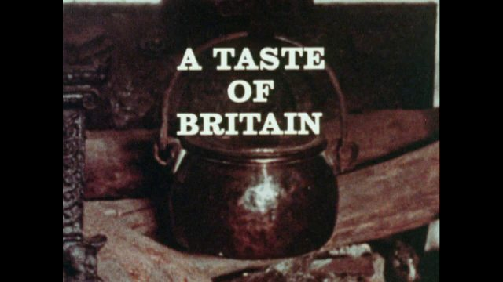
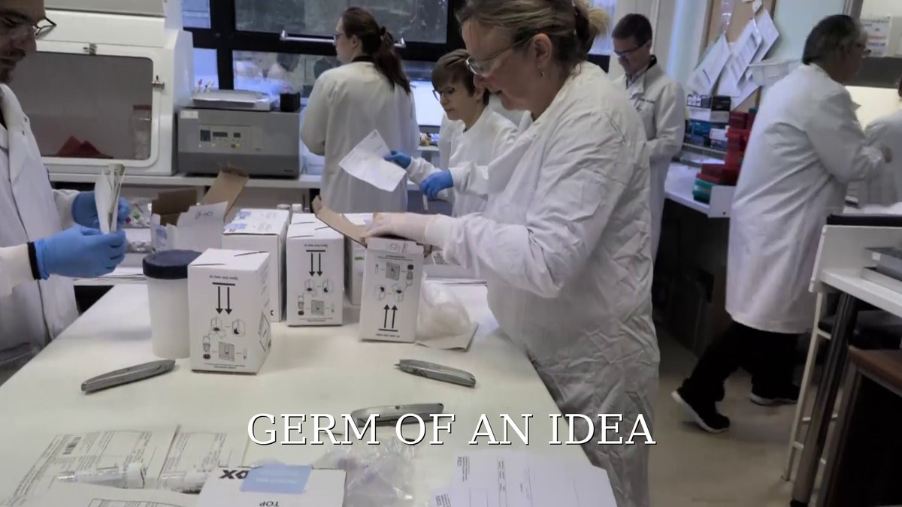

FRACTURED WORLDS
Seven films exploring the lives of artists, designers, scientists and performers whose lives were shaped by exile from Nazi Europe.
EXPLORECurrent documentaries exploring memory, place, science and the lives of remarkable people.
Seven films exploring the lives of artists, designers, scientists and performers whose lives were shaped by exile from Nazi Europe.
EXPLORE
A Taste of Britain was a groundbreaking documentary series I made fifty years ago. It was the first food programme on British television. Today there is growing interest in the extraordinary characters we managed to track down. I am now revisiting the series meeting people and families involved with a view to making an update film.

When two doctors in Birmingham recognised that the NHS was falling behind in the rapid diagnosis of bacteria, they decided to have a go on their own. Starting with skips and borrowed equipment, they went on to create a laboratory that is now unique in Europe.